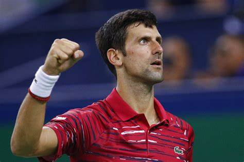

My Inspiration

Swimming as an Essential Life Skill.To learn swimming needs practical practicing .The swimming learner needs both courage and physical strength .Since the human body is very slightly less dense than water, water supports the weight of the body during swimming.Swimming can be undertaken using a wide range of styles, known as 'strokes'.There are four main strokes used in competition and recreation swimming: the front crawl, also known as freestyle, breaststroke, backstroke and butterfly.There are many reasons why people swim, from swimming as a recreational pursuit to swimming as a necessary part of a job or other activity. Swimming may also be used to rehabilitate injuries, especially various cardiovascular and muscle injuries. People may also pursue swimming as a career or field of interest. Some may be gifted and choose to compete professionally and go onto claim fame.For me Swimming is my passion.